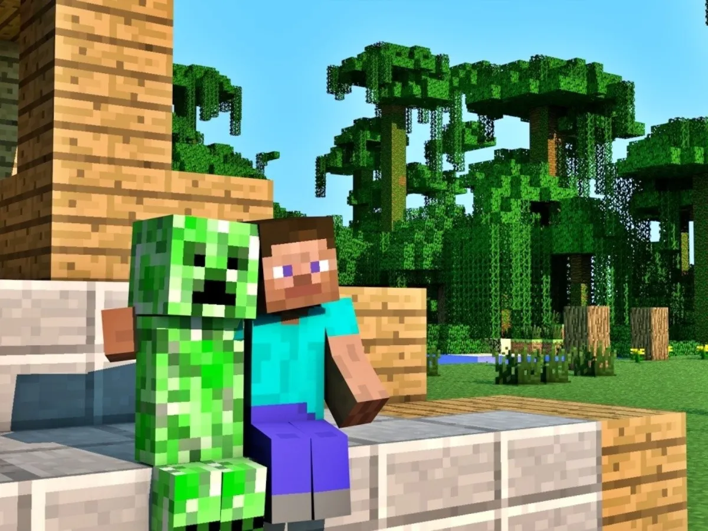

Descubre los diferentes juegos de Minecraft, desde el clásico sandbox de supervivencia hasta el RPG de acción y estrategia. Explora los tráilers, los complementos, los coleccionables y las nov… Descargar Minecraft Descarga Minecraft para Windows, Mac y muchos más. Descarga el software de se… Probar Minecraft Gratis ¡Prueba a jugar a Minecraft gratis! Obtén la prueba gratuita de Minecraft para disp… Minecraft Funcionamiento perfecto: Minecraft: Bedrock Edition no requiere ordenadore… Perfil Centro de ayuda de Minecraft. Explora nuestras detalladas preguntas más frecu… Iniciar Sesión Minecraft. Explora tu propio mundo único, sobrevive a la noche y crea todo lo que … Jugar a Minecraft Clásico Sorry! This version of Minecraft requires a keyboard. Please try again on another de…
| Mob | Fuerza | Salud |
| Steve | 5 | 20 |
| zombi | 5 | 20 |
| creeper | 5 | 9 |